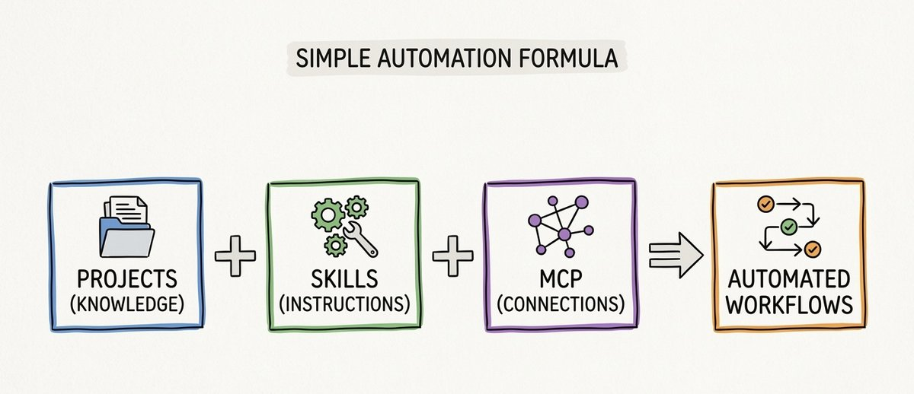
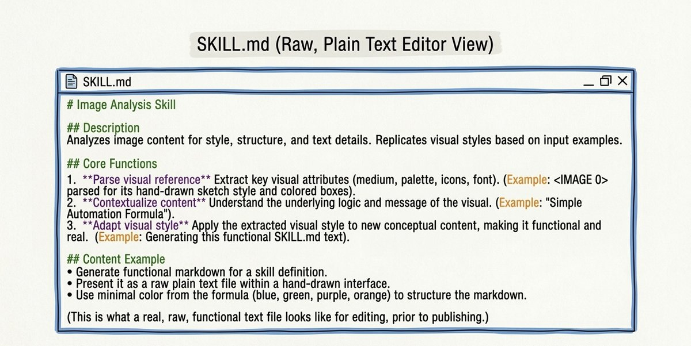
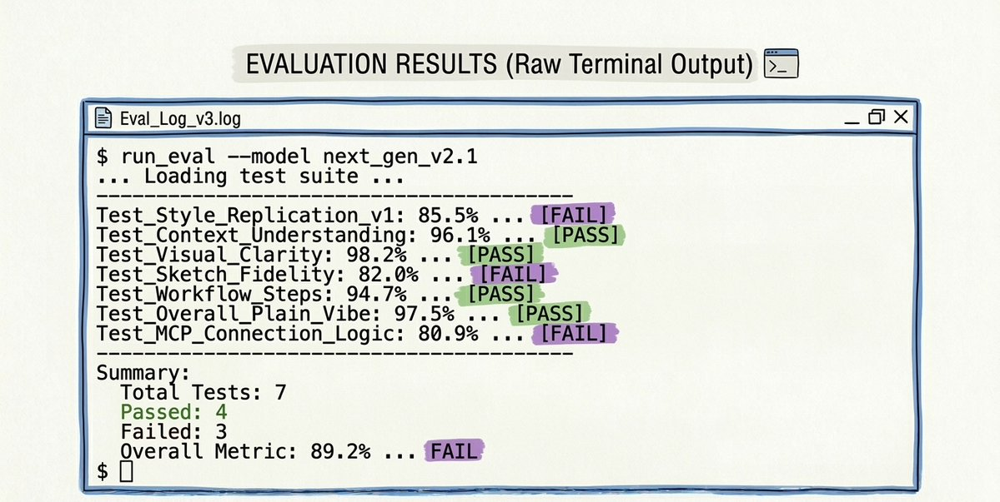

把 Projects、Skills、MCP 的角色講清楚，並用 4 個模組拆出一條從入門、架構、測試到部署的完整路徑。
這頁是把 X 長文 `2031755971265974632` 轉成 blog 長文版的結果。內容保留原文的核心主張，但重新編排成比較適合站內閱讀的教學節奏，重點放在「什麼時候該做 Skill、Skill 應該怎麼寫、何時需要腳本、如何長期維護」。
Skill 的價值不在於「多一個設定檔」，而在於把重複、脆弱、靠記憶的操作，轉成固定流程。當你開始把提示、輸出格式、例外處理、測試方式都寫成結構，Claude 的工作品質才會真正穩定。
這是全文最務實的判斷門檻。不是所有事都需要做 Skill，但一旦你開始持續重複，就代表流程可以被固化。
命名、YAML frontmatter、references、腳本、錯誤邊界，這些都不是附屬品，而是 Skill 真正能不能穩定工作的原因。
沒有測試，你只是在憑感覺。沒有 handover，你只是在每次重新開始。文章後半段其實是在補這兩件最常被忽略的事。
原文一開始最有效的地方，是先把三種能力拆清楚。Projects 是知識庫，Skills 是流程手冊，MCP 是資料連接層。這個分類一旦模糊，後面所有實作都會歪掉。
csv-cleaner。SKILL.md，而且大小寫不能錯。references/，不要把長文硬塞進主檔。
如果你在不同對話裡反覆輸入同一組規則，例如品牌語氣、輸出格式、欄位規範、錯誤邊界，這就是做 Skill 的訊號。Skill 的第一個價值不是「更炫」，而是把記憶負擔從人腦轉成系統規則。
第二模組開始進入真正的架構問題。不是所有事都該寫在 SKILL.md 裡。遇到資料解析、統計、檔案轉換、批次處理時，腳本比語言模型更可靠。
references/，並用條件式讀取。這一段最值得帶走的觀念是：不要把所有東西都塞進同一個 Skill。你需要的是可組合、可維護的模組邊界。
Generate YAML frontmatter for a Claude Skill. Requirements: - kebab-case name - aggressive trigger description - clear negative boundaries - under 300 words - include a confidence report for activation accuracy

這一段很像把 prompt engineering 拉回工程紀律。原文列出幾種常見失敗模式，例如 Skill 根本沒觸發、觸發錯誤、輸出飄走、遇到 edge case 崩掉，然後要求你用 Evals / Benchmarks / A/B 比較去驗證。

Audit a complete SKILL.md before deployment. Check: - frontmatter quality - instruction clarity - example quality - edge case coverage - reference file design Return an overall deployment readiness score.
原文最後一模組談的是很多教程不會提的事：就算 Skill 做好了，只要上下文斷掉，長期任務還是會失憶。所以作者提出一個極實用的 handover 規則，把 session summary 寫進 context-log.md。
在每次對話開始時，先讀 context-log.md；在每次對話結束時，再把今天完成什麼、剩下什麼、下一步該做什麼寫回去。這其實就是把 AI 當成會輪班的系統，而不是一次性聊天工具。
這也是這篇長文最值得串進 blog 的原因：它不是只在介紹新名詞，而是在教你用工程化方式管理 Claude 的工作品質。
這頁內容來自 X 貼文 2031755971265974632 的文章版，已先抽取成 Markdown 與圖片，再依 blog 現有視覺系統重編成長文頁。